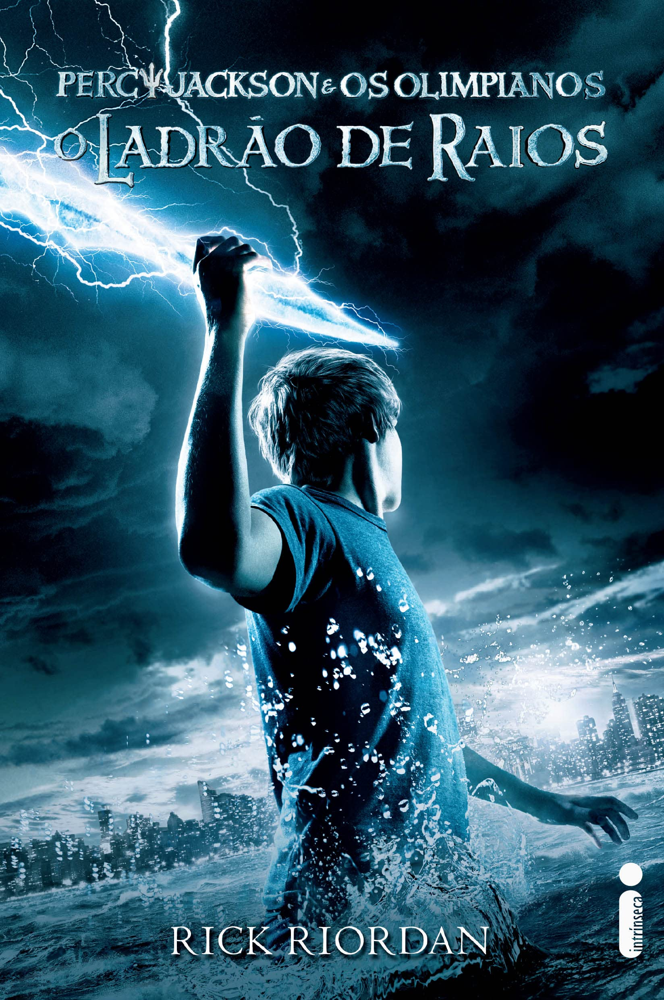

|| Harry Porter e a Pedra Filosofal ||

Sinopse
Harry Potter
nunca tinha ouvido falar em Hogwarts até o momento em que as CARTAS começam a aparecer no capacho do número 4 da rua dos Alfeneiros.Endereçadas com um LACRE PÚRPURA, elas são repidamente confiscadas por seus tios ,TERRÍVEIS. E então, no décimo primeiro aniversário de Harry,um homem GIGANTESCO com olhos luzindo como besouros negros chamado RÚBEO HAGRID entra intempestivamente com uma notícia ASSOMBROSA:Harry Potter é um bruxo e tem uma vaga na ESCOLA DE MAGIA E BRUXARIA DE HOGWARTS. Uma aventura inacreditável está para começar!
maiores informações Clique Aqui
Fonte: Google Books
| Data da Primeira Publicação | Autor | Idioma Original | Gêneros |
|---|---|---|---|
| 26 de Junho de 1997 | J. K. Rowling | Inglês | Romance, Literatura infantil,Literatura fantástica, Alta fantasia |
|| O Guia do Mochileiro das Galáxias ||

Sinopse
Considerado um dos maiores clássicos da literatura de ficção científica, O Guia do Mochileiro das Galáxias vem encantando gerações de leitores ao redor do mundo com seu humor afiado.Este é o primeiro título da famosa série escrita por Douglas Adams, que conta as aventuras espaciais do inglês Arthur Dent e de seu amigo Ford Prefect.A dupla escapa da destruição da Terra pegando carona numa nave alienígena, graças aos conhecimentos de Prefect, um E.T. que vivia disfarçado de ator desempregado enquanto fazia pesquisa de campo para a nova edição do Guia do Mochileiro das Galáxias, o melhor guia de viagens interplanetário.Mestre da sátira, Douglas Adams cria personagens inesquecíveis e situações mirabolantes para debochar da burocracia, dos políticos, da "alta cultura" e de diversas instituições atuais. Seu livro, que trata em última instância da busca do sentido da vida, não só diverte como também faz pensar.
maiores informações Clique Aqui
Fonte: Google Books
| Data da Primeira Publicação | Autor | Idioma Original | Gêneros |
|---|---|---|---|
| 12 de Outubro de 1979 | Douglas Adams | Inglês | Ficção científica, Romance, Humor, Ficção científica cômica, Ficção humorística |
|| Alice no País das Maravilhas ||

Sinopse
Você poderia me dizer, por favor, qual caminho eu devo seguir a partir daqui?
Que esta pergunta seja feita por uma garotinha perdida de casa (após ter seguido um coelho falante até sua toca) a uma espécie de gato fantasmagórico flutuante já não causa nenhuma estranheza quando chegamos na tal parte da história, pois como nos alertou a própria menina: 'há tanta coisa estranha acontecendo aqui que eu já não me surpreendo com mais nada'.Com este conto surreal e fantástico, muitas vezes sem sentido algum, noutras vezes carregado de sentido oculto e profundo, Lewis Carroll revolucionou para sempre a literatura infantil, praticamente a refundando (não surpreende que encontremos algo do seu estilo em Antoine de Saint-Exupéry e Monteiro Lobato). É aqui que conheceremos célebres personagens como o Coelho Branco, o Chapeleiro Louco e o Gato de Cheshire. É aqui que veremos, quem sabe, a primeira descrição genuína dos sonhos infantis. É aqui que celebraremos toda a magia da boa literatura - esta que não morre nunca.Incontáveis peças de teatro, filmes e livros secundários foram criados por conta desta obra preciosa, mas nada substituí ler o original; ainda mais quando se trata da tradução de um de nossos maiores escritores, Monteiro Lobato, numa edição recheada com as clássicas ilustrações de John Tenniel e Arthur Rackham. Bem-vindo ao País das Maravilhas!
maiores informações Clique Aqui
Fonte: Google Books
| Data da Primeira Publicação | Autor | Idioma Original | Gêneros |
|---|---|---|---|
| Novembro de 1865 | Lewis Carroll | Inglês | Literatura infantil, Literatura fantástica, Ficção Absurdista, Fantástico |
|| O Senhor dos Anéis: A Sociedade do Anel ||

Sinopse
A Sociedade do Anel O volume inicial de O Senhor dos Anéis
, lançado originalmente em julho de 1954, foi o primeiro grande épico de fantasia moderno, conquistando milhões de leitores e se tornando o padrão de referência para todas as outras obras do gênero até hoje. A imaginação prodigiosa de J.R.R. Tolkien e seu conhecimento profundo das antigas mitologias da Europa permitiram que ele criasse um universo tão complexo e convincente quanto o mundo real. A Sociedade do Anel começa no Condado, a região rural do oeste da Terra-média onde vivem os diminutos e pacatos hobbits. Bilbo Bolseiro, um dos raros aventureiros desse povo, cujas peripécias foram contadas em O Hobbit, resolve ir embora do Condado e deixa sua considerável herança nas mãos de seu jovem parente Frodo. O mais importante legado de Bilbo é o anel mágico que costumava usar para se tornar invisível. No entanto, o mago Gandalf, companheiro de aventuras do velho hobbit, revela a Frodo que o objeto é o Um Anel, a raiz do poder demoníaco de Sauron, o Senhor Sombrio, que deseja escravizar todos os povos da Terra-média. A única maneira de eliminar a ameaça de Sauron é destruir o Um Anel nas entranhas da própria montanha de fogo onde foi forjado. A revelação faz com que Frodo e seus companheiros hobbits Sam, Merry e Pippin deixem a segurança do Condado e iniciem uma perigosa jornada rumo ao leste. Ao lado de representantes dos outros Povos Livres que resistem ao Senhor Sombrio, eles formam a Sociedade do Anel. Alguém uma vez disse que o mundo dos leitores de língua inglesa se divide entre os que já leram O Senhor dos Anéis e os que um dia lerão o livro. Com esta nova tradução da obra, o fascínio dessa aventura atemporal ficará ainda mais evidente para os leitores brasileiros, tanto os que já conhecem a saga como os que estão prestes a descobrir seu encanto
maiores informações Clique Aqui
Fonte: Google Books
| Data da Primeira Publicação | Autor | Idioma Original | Gêneros |
|---|---|---|---|
| 01 de Janeiro de 2002 | J.R.R. Tolkien | Inglês | Literatura fantástica |
|| O Ladrão de Raios ||
Sinopse
Primeiro volume da saga Percy Jackson e os olimpianos, O ladrão de raio
s esteve entre os primeiros lugares na lista das séries mais vendidas do The New York Times. O autor conjuga lendas da mitologia grega com aventuras no século XXI. Nelas, os deuses do Olimpo continuam vivos, ainda se apaixonam por mortais e geram filhos metade deuses, metade humanos, como os heróis da Grécia antiga. Marcados pelo destino, eles dificilmente passam da adolescência. Poucos conseguem descobrir sua identidade. O garoto-problema Percy Jackson é um deles
. Tem experiências estranhas em que deuses e monstros mitológicos parecem saltar das páginas dos livros direto para a sua vida. Pior que isso: algumas dessas criaturas estão bastante irritadas. Um artefato precioso foi roubado do Monte Olimpo e Percy é o principal suspeito. Para restaurar a paz, ele e seus amigos – jovens heróis modernos – terão de fazer mais do que capturar o verdadeiro ladrão: precisam elucidar uma traição mais ameaçadora que fúria dos deuses.
maiores informações Clique Aqui
Fonte: Google Books
| Data da Primeira Publicação | Autor | Idioma Original | Gêneros |
|---|---|---|---|
| 15 de Dezembro de 2011 | Rick Riordan | Inglês | Mitologia grega, Romance, Ficção juvenil, Literatura fantástica, Alta fantasia |
todos os direitos reservados para Marcel